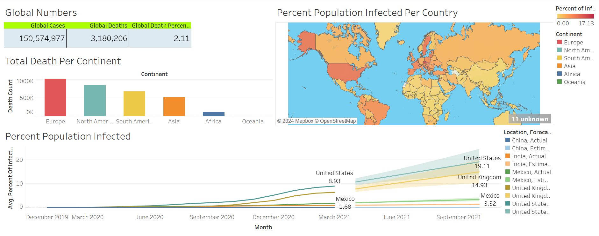
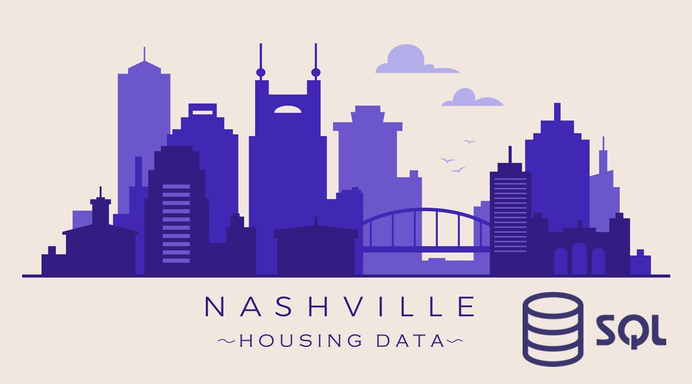
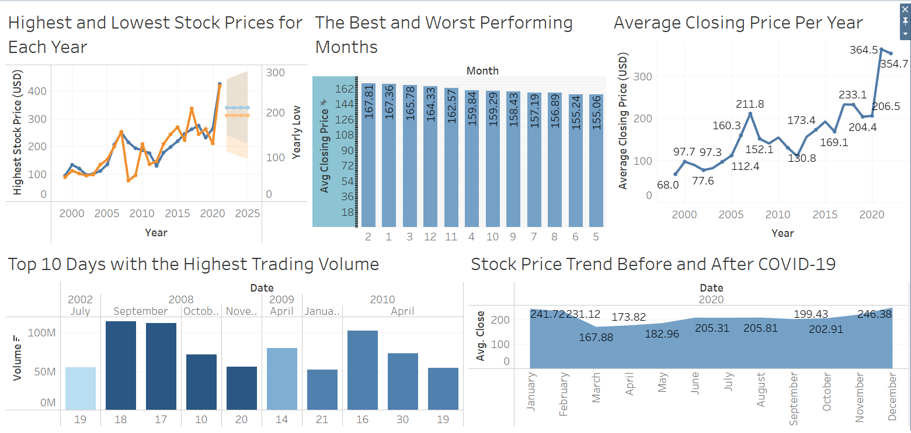

This project leverages data analytics techniques to analyze housing trends
in Mexico, utilizing tools such as Python for data cleaning, Matplotlib and
Plotly for visualization, and statistical analysis to uncover key factors
influencing pricing. The project aims to provide actionable insights into
regional market dynamics through comprehensive data analysis and
visualization

This project focused on leveraging SQL to explore and analyze COVID-19 data. Key aspects
examined included death percentages, infection rates relative to population sizes, and
global trends in new cases and deaths. The insights gained from these analyses provide a
deeper understanding of the pandemic's dynamics and its impact across various locations and
over different time periods

The visualization effectively communicates trends and comparisons, offering a clear visual
narrative of the pandemic's impact and progression over time and across various geographic
regions

The "Housing in Nashville" SQL project involved comprehensive data cleaning and preparation tasks.
Key methods included converting date formats using CONVERT() function, filling missing values with
ISNULL() and self-joins, splitting address data with SUBSTRING() and CHARINDEX(), and parsing
multi-component fields using PARSENAME()
This project features a Student Expense Tracker app built with Python to assist students in managing
their finances. The app allows users to input and categorize expenses, storing the data in a CSV file.
It generates a comprehensive summary of expenses, including totals by category, overall spending,
remaining budget, and a daily budget for the rest of the month
This project involved developing an in-depth analysis of stock price performance over time, leveraging
SQL queries and Tableau visualizations to track the highest and lowest prices per year. Key market
trends and insights were presented through interactive dashboards

This visualization captures key trends in Goldman Sachs' stock performance, illustrating
patterns in pricing, trading volume, and responses to major market events over time